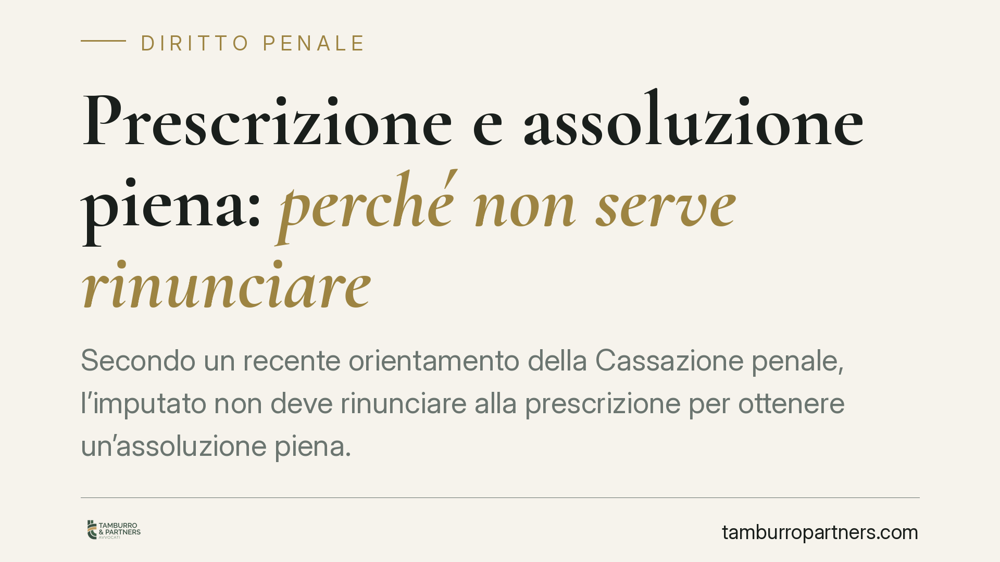

Prescrizione e assoluzione piena: perché non serve rinunciare
Secondo un recente orientamento della Cassazione penale, l'imputato non deve rinunciare alla prescrizione per ottenere un'assoluzione piena. Quando dagli atti l'innocenza è evidente, il giudice deve pronunciare l'assoluzione nel merito d'ufficio, ai sensi dell'art. 129, comma 2, c.p.p. La distinzione tra proscioglimento per prescrizione e assoluzione piena incide su reputazione, azioni civili e profili disciplinari.

Il caso
Un imprenditore imputato viene prosciolto per intervenuta prescrizione del reato. La formula, però, non è neutra: il proscioglimento per prescrizione chiude il processo senza affermare l'innocenza. Da qui il contrasto portato in Cassazione, sulla questione se l'imputato debba prima rinunciare alla prescrizione per aspirare a un'assoluzione nel merito.
La Suprema Corte ha ribadito un principio consolidato: se dagli atti l'estraneità ai fatti è evidente, il giudice deve assolvere nel merito d'ufficio, senza subordinare questa pronuncia a una rinuncia dell'imputato.
> Nota di verifica. Alla pubblicazione, gli estremi esatti della pronuncia (numero e anno) non risultano confermati da fonte ufficiale. Il principio qui esposto riflette l'orientamento consolidato della Cassazione sull'art. 129 c.p.p. Prima di qualsiasi utilizzo processuale, consigliamo di verificare la massima su CED Cassazione o Italgiure.
Inquadramento normativo
Il riferimento centrale è l'art. 129, comma 2, c.p.p. La norma stabilisce che, quando ricorre una causa di estinzione del reato — come la prescrizione — ma dagli atti risulta *evidente* che il fatto non sussiste, che l'imputato non lo ha commesso, che il fatto non costituisce reato o non è previsto dalla legge come reato, il giudice pronuncia sentenza di assoluzione o di non luogo a procedere con la formula prescritta.
In altri termini, la formula più favorevole prevale sulla causa estintiva. Non è l'imputato a dover "scegliere" l'assoluzione rinunciando alla prescrizione (facoltà prevista dall'art. 157 c.p., ultimo comma): è il giudice a dover riconoscere d'ufficio l'innocenza quando questa emerge con immediatezza dal fascicolo.
Cosa significa "evidenza"
Il punto delicato è il concetto di evidenza. Le Sezioni Unite hanno chiarito che l'art. 129, comma 2, c.p.p. opera solo quando la prova dell'innocenza è *immediata* e *obiettiva*, percepibile dal giudice senza necessità di ulteriore attività istruttoria o di apprezzamenti valutativi complessi.
La distinzione è netta:
- se l'innocenza risulta già dagli atti, in modo piano e non contestabile, scatta l'obbligo di assoluzione nel merito;
- se invece servirebbe un'ulteriore istruttoria, o la valutazione del materiale probatorio è incerta e contraddittoria, il giudice non può "forzare" l'assoluzione e deve limitarsi a dichiarare la prescrizione.
Questo equilibrio evita che l'art. 129 diventi una scorciatoia per celebrare il merito oltre i limiti della causa estintiva, ma al tempo stesso impedisce di negare l'assoluzione a chi è palesemente estraneo ai fatti.
Implicazioni pratiche
Per il destinatario — tipicamente l'imputato — la differenza tra le due formule è tutt'altro che teorica.
Il proscioglimento per prescrizione non afferma l'innocenza. Ne derivano conseguenze concrete:
- sede civile: una sentenza di prescrizione non esclude il riconoscimento di una responsabilità risarcitoria in sede civile, dove la valutazione dei fatti prosegue con regole proprie;
- profilo disciplinare: per professionisti, dipendenti pubblici e iscritti ad albi, la prescrizione penale non chiude necessariamente il procedimento disciplinare, che può concludersi sfavorevolmente;
- profilo reputazionale: agli occhi dei terzi, "prescritto" non equivale a "assolto perché innocente".
L'assoluzione piena, al contrario, cancella l'addebito nel merito e offre una tutela ben più solida su tutti questi fronti. Da qui l'interesse concreto a sollecitarla quando le condizioni ci sono.
Cosa fare in concreto
- Valutate subito la posizione processuale: verificate se dagli atti emerge un'evidenza di innocenza spendibile ai sensi dell'art. 129, comma 2, c.p.p.
- Sollecitate l'assoluzione nel merito con memorie e conclusioni mirate, evidenziando gli elementi che rendono l'estraneità ai fatti immediata e non contestabile.
- Valutate la rinuncia alla prescrizione (art. 157 c.p., ultimo comma) come opzione autonoma, da ponderare caso per caso e solo con una prognosi favorevole sull'esito nel merito.
- Considerate i fronti collaterali: verificate le ricadute civili, disciplinari e reputazionali prima di accettare un semplice proscioglimento per prescrizione.
- Verificate sempre la giurisprudenza richiamata su fonti ufficiali prima di fondarvi un atto difensivo.
---
Contributo informativo a cura di Tamburro & Partners Avvocati - Avv. Giuseppe Tamburro. Non costituisce parere legale.
Ogni condominio ha una storia a sé.
Se gestisci un'amministrazione e vuoi un confronto su una specifica questione condominiale, scrivi allo studio. Ti rispondiamo entro un giorno lavorativo.